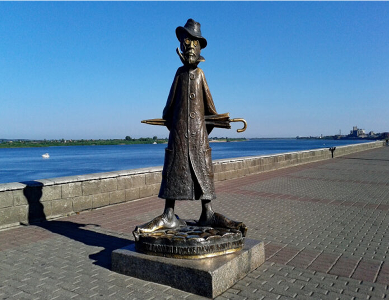

Достопримечательности Томска

Литературная достопримечательность
Памятник А.П.Чехову
Памятник А.П.Чехову
История: Установлен в 1960 году к 100-летию со дня рождения писателя.История: Установлен в 1960 году к 100-летию со дня рождения писателя.
Легенда: Скульптор запечатлел Чехова сидящим на скамейке. Существует городская примета: если потереть нос бронзовому писателю или посидеть рядом, это принесет удачу в творчестве и учебе.
Контекст: Чехов посетил Томск в 1890 году по пути на Сахалин и оставил о городе довольно критические, но меткие заметки, которые теперь стали частью местного фольклора.
К списку
История: Установлен в 1960 году к 100-летию со дня рождения писателя.История: Установлен в 1960 году к 100-летию со дня рождения писателя.
Легенда: Скульптор запечатлел Чехова сидящим на скамейке. Существует городская примета: если потереть нос бронзовому писателю или посидеть рядом, это принесет удачу в творчестве и учебе.
Контекст: Чехов посетил Томск в 1890 году по пути на Сахалин и оставил о городе довольно критические, но меткие заметки, которые теперь стали частью местного фольклора.